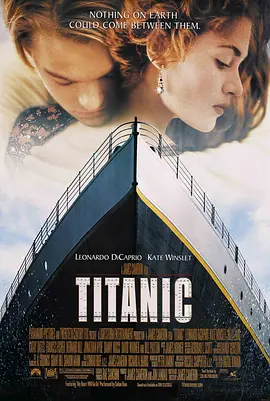

酒鬼一家小迷妹
|  |
Rose可以为爱而死，最后在Jack的舍命相救及恳求下，选择了为爱而活，而被留下的那个人是痛苦的。 到老奶奶的Rose站在船边上，把海洋之星扔回海中时，我想那是它最好的归宿了。灾难面前 ，有的人把生存的机会留给了别人，而有的人花钱占用了别人的机会。 |


酒鬼一家小迷妹

|
宫崎骏没有迪斯尼那么花哨 甚至有些落伍 直到现在 他还坚持用手工绘画而不是电脑绘图来完成自己的卡 通片 但他懂得一部卡通片 或者一部影片 应该用什 么去打动别人 所以 宫崎骏笔下的形象是一个个人 而 不是一个个没有知觉的卡通形象 |
颜饭yy

|
要想从梦境里醒过来需要重大撞击， 但有时你无法分辨到底是不是在梦里，所以有了陀螺这个图腾。 然而你又怎么确定你现在经历的现实不会是一个梦境？梦醒的条件大概就是 离开这个世界吧。梦、梦中梦、梦与现实错综复杂，即使烧脑多看几次也会 看懂的电影，值得一看。 |